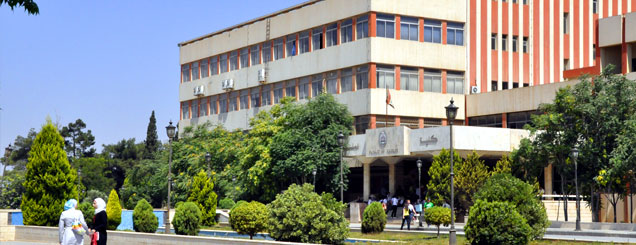
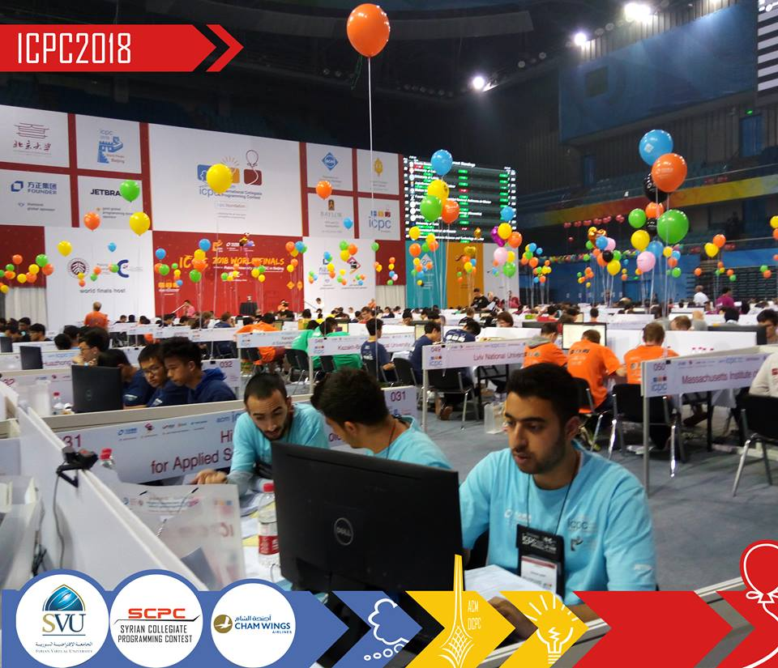
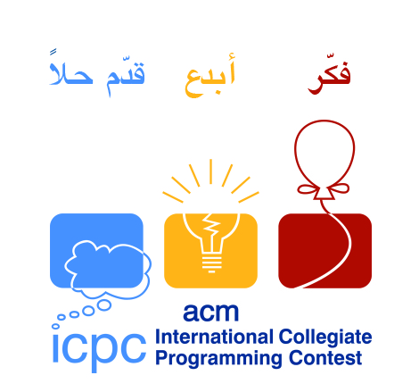

لمحة عن الكلية
أحدثت كلية الهندسة المعلوماتية بالمرسوم الجمهوري رقم / 65 / عام 2000 ، حيث انتقل إليها طلاب السنة الثانية والثالثة قسم المعلوماتية في كلية العلوم وطلاب السنة الثانية قسم الحواسيب في كلية الهندسة الميكانيكية والكهربائية، وتم تخريج أول دفعة من المهندسين في العام 2003. وتهدف كلية الهندسة المعلوماتية إلى: - اعداد المختصين في الهندسة المعلوماتية - تأهيل الخريجين للمشاركة في التنمية والتطوير - اعداد الباحثين العلميين في مجال المعلوماتية - مواكبة التقدم والبحث العلمي - المساهمة في الدورات التدريبية المستمرة - تعزيز وبناء شخصية الطالب اجتماعيا وعلمي - تشجيع النشاطات الفكرية والثقافية - توثيق الروابط مع الهيئات العلمية
أقسام الكلية
:تكون كلية الهندسة المعلوماتية من الأقسام التالية
قسم البرمجيات ونظم المعلومات
قسم النظم والشبكات الحاسوبية
يجـوز وبنـاء"على اقتراح المجالس المختصة إحداث أقسام وشعب أخرى في الكليـة عنـد الضرورة
إدارة الكلية
عميد الكلية: أ. د. ناصر أبوصالح
نائب العميد للشؤون العلمية: د.محسن عبود
نائب العميد للشؤون الإدارية : د.أسماء شعار
رئيس قسم هندسة البرمجيات ونظم المعلومات: د.كمال السلوم
رئيس قسم هندسة الشبكات والنظم الحاسوبية: د.أكرم المرعي
رئيس الدائرة: آنا علي
مميزات الكلية
 
(ACM)من مميزات الكلية: المسابقة البرمجية
هي أحد أهم المسابقات البرمجية في العالم ،تأسست عام 1970 وتقام سنوياً تحت إشراف جمعية الحوسبة الآلية
google Ibm وبدعم من كبرى الشركات التكنولوجية مثل
تستهدف المسابقة طلاب الجامعات من أي تخصص حيث يتسابقون ضمن فرق تمثل جامعاتهم و يتألف كل فريق من ثلاث طلاب. تتمايز هذه الفرق حسب مستواها العلمي، القدرة على التحليل، التصميم وتنجز خوارزميات الحل بأحد لغات البرمجة
مع القدرة على استثمار الوقت وتوزيع المهام والتعاون بين أعضاء الفريق والعمل الجماعي.